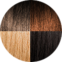

Podtón pleti je jemný farebný nádych pokožky, vďaka ktorému je vaša pleť jedinečná. Odpovedzte na niekoľko otázok, ktoré vám pomôžu určiť váš podtón.
Aká je vaša prirodzená farba vlasov?
-
tmavá blond,
až stredne
hnedá -
veľmi svetlá
alebo veľmi
tmavá až čierna -
hnedá, ryšavá,
medová
alebo čierna

Vhodný mejkap pre vás je ten s označením D/W*.
*W ako Warm, teda teplý podtón.
Podtón ostáva rovnaký aj pri opálení.
Mení sa iba tón pleti od svetlého (č. 3) až po tmavý (č. 7).
Na výber máte z týchto odtieňov True Match:
Vhodný mejkap pre vás je ten s označením R/C*.
*C ako Cold, teda studený podtón.
Podtón ostáva rovnaký aj pri opálení.
Mení sa iba tón pleti od svetlého (č. 1) až po tmavý (č. 5).
Na výber máte z týchto odtieňov True Match:
Vhodný mejkap pre vás je ten s označením N*.
*N ako Neutral, teda neutrálny podtón.
Podtón ostáva rovnaký aj pri opálení.
Mení sa iba tón pleti od svetlého (č. 1) až po tmavý (č. 5).
Na výber máte z týchto odtieňov True Match: